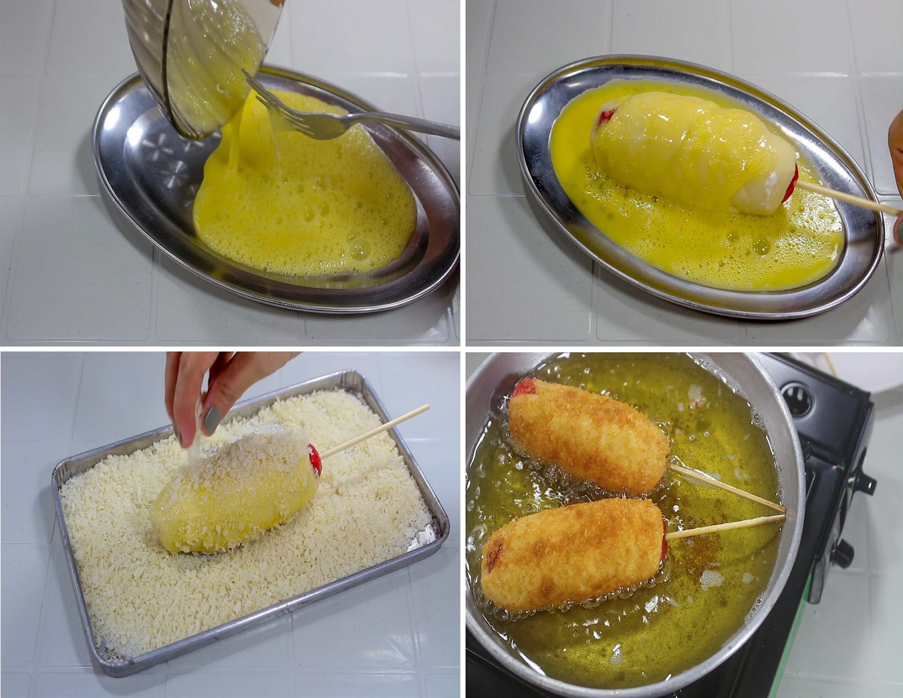
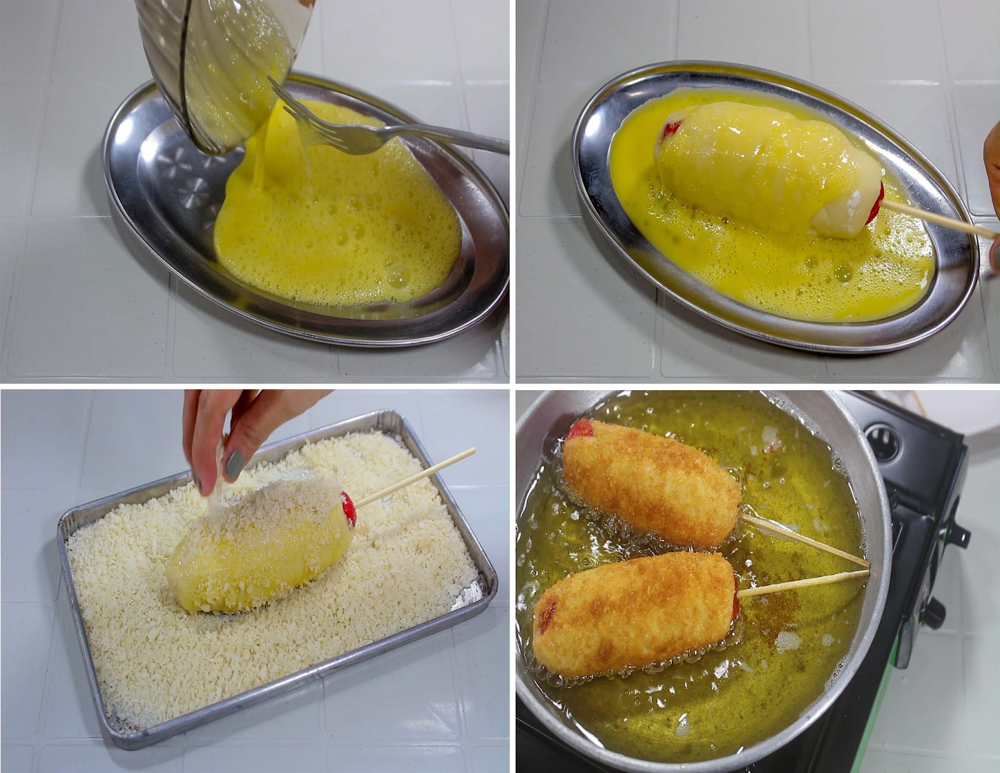

A corn dog is a sausage or hotdogs on a stick that has been coated in a thick layer of cornmeal batter and deep fried that is perfect for snack.
Ingredients
- 1 2/3 cups all-purpose flour, sifted
- 2 tablespoons sugar
- 2 teaspoons instant dry yeast
- 1/2 teaspoon salt
- 1 cup water, warmed to around 110 degrees F or 43 degrees C
- 3 pieces hotdogs
- 1 190-gram pack mozzarella cheese
- yellow mustard, to serve
- 1 cup cauliflower, (florets), trimmed
- ketchup, to serve
- oil, for frying
Procedure
Step 1: Make the dough: In a large bowl, combine flour, sugar, instant dry yeast, and salt. Make a well and add water. Using a silicone spatula, mix until a sticky dough is formed. Mix using the spatula for at least 3 minutes up to 5 minutes, until you can stretch the dough about 6 inches before snapping. Transfer and spread the sticky dough into a shallow serving dish that is long. Cover and set aside for 40 minutes or up to 1 hour until risen and doubled in size.
Step 2: In a large deep pan over medium-high heat, heat oil until 350 degrees F or 175 degrees C or for deep frying.
Step 3: Meanwhile, pat hotdogs dry. Cut each one in half, crosswise. Cut mozzarella into the same width. Starting with the hotdogs, push and twist the skewers through a hotdog. Top it with a mozzarella stick. Repeat until each stick has hotdogs and cheese.
Step 4: To coat the hotdogs, roll each stick into the sticky dough. If necessary, wrap the dough around any exposed parts of the hotdog or cheese. Immediately roll the dough-wrapped stick into the Panko then place in the hot oil. Repeat with each skewer.
Step 5: Fry until golden brown on all sides, rotating the hotdogs to ensure even browning on all sides. Drain on a rack over paper towels. Serve immediately while still warm with ketchup and mustard or sprinkled with sugar.
Step 6: Serve and Satisfy your cravings!